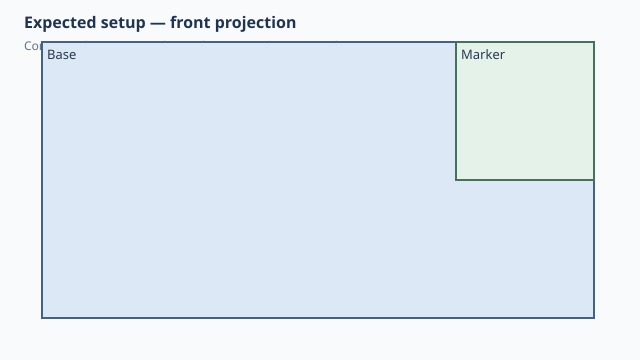

← Qualification / Topology-backed corner anchor
Forge qualification case
NOT RUNQ1 Q2 documented
Topology-backed corner anchor
1. Test setup

Test goal
Verify a corner reference that follows both parent width and height changes.
Pass criteria
The marker sits on the front-top-right corner of the base.
Mutation criterion
Change the base from 40x20 to 80x40 mm; the marker must follow both the new right side and new top.
2. Implementation under test
Fixture source
class Base:
width = 40.0
height = 20.0
def build(self):
return Box(self.width, 30, self.height)
class Marker:
def build(self):
return Box(10, 10, 10)
class CornerAnchor:
base_width = 40.0
base_height = 20.0
def build(self):
base = Base(
width=self.base_width,
height=self.base_height,
)
marker = Marker().attach(
base,
parent=Anchor.FRONT_TOP_RIGHT,
child=Anchor.BACK_TOP_RIGHT,
)
return base + marker
CornerAnchor()
Public Forge API used
Anchor.FRONT_TOP_RIGHT paired with child Anchor.BACK_TOP_RIGHT
Forge model represented by this fixture
A standard corner Anchor is resolved to an edge/on/corner native topology reference rather than a free point.
3. Generated SolidCraft relationship
joint.create receives SolidCraft edge/on/corner picks so the saved design can re-find the corner after geometry changes.
Show generated relationship / command details
[
{
"command": "joint.origin",
"params": {
"name": "Base:1.front_top_right",
"occurrence": "Base:1",
"edge": [
20.0,
-15.0,
10.0
],
"on": [
0.0,
-15.0,
10.0
],
"corner": [
20.0,
-15.0,
20.0
]
}
},
{
"command": "joint.create",
"params": {
"type": "rigid",
"name": "Attach Marker:1 to Base:1",
"a": "Base:1.front_top_right",
"b": {
"occurrence": "Marker:1",
"point": [
5.0,
5.0,
10.0
],
"z": [
0.0,
1.0,
0.0
],
"x": [
0.0,
0.0,
-1.0
]
}
}
}
]3. Results
Native result data was not supplied to this site build. Run the native qualification for measured results.
No source-matched native verification was supplied to this site build. The case sheet and command contract are still shown.
6. Evidence and references
Raw evidence
Show generated files and measurements
Reference models
These comparisons clarify concepts; Forge does not promise API compatibility with them.
- BOSL2: BOSL2 supports side/edge/corner anchors; its anchor also carries orientation, which is a useful design reference for Forge.